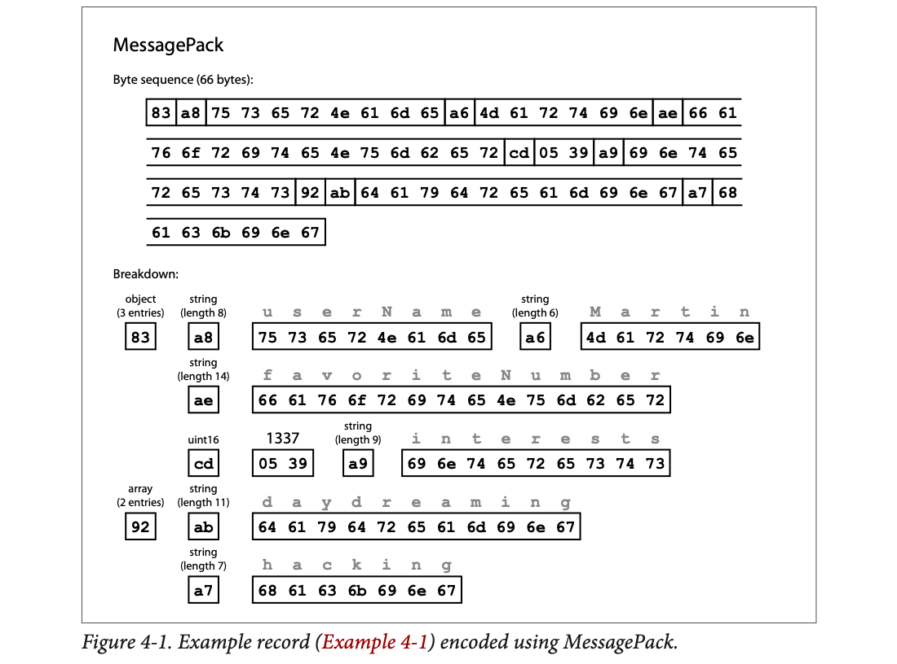
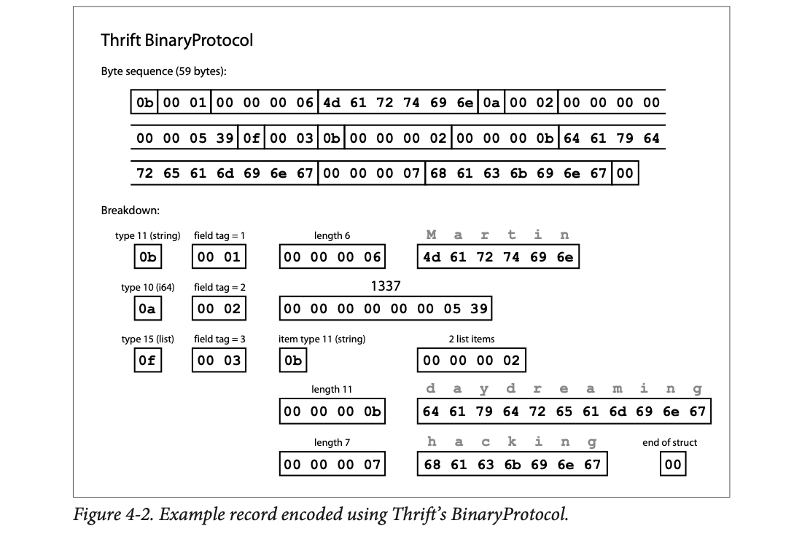
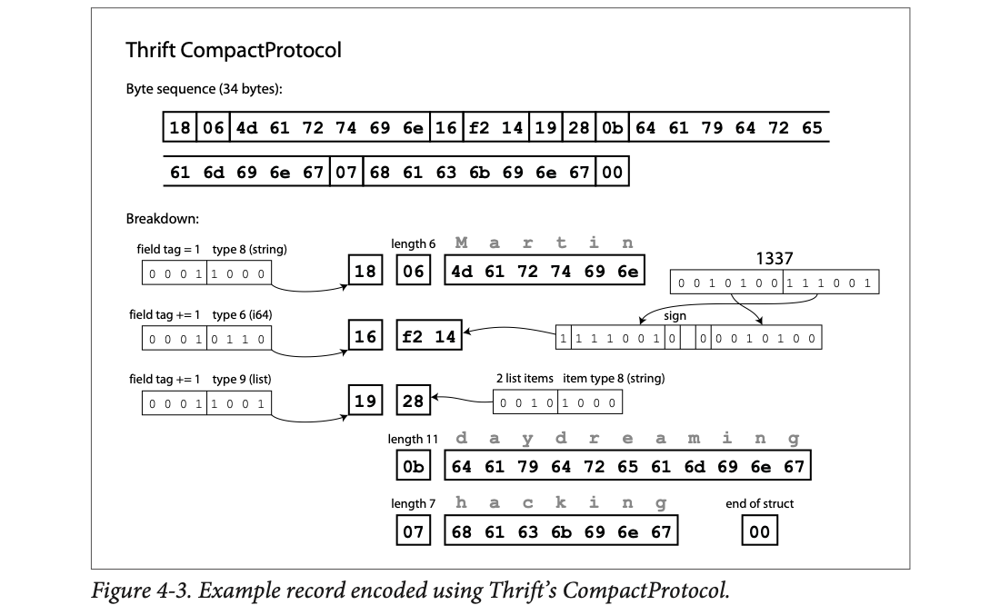
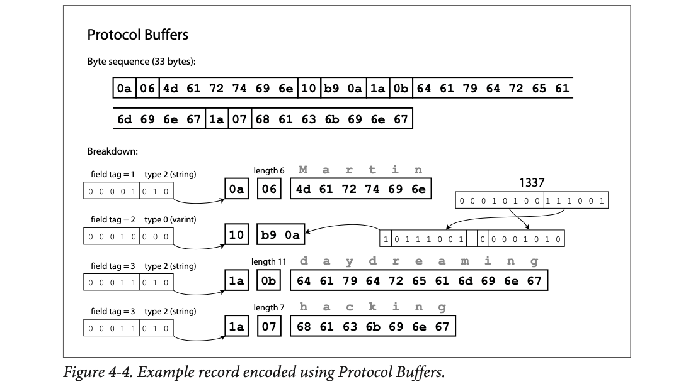
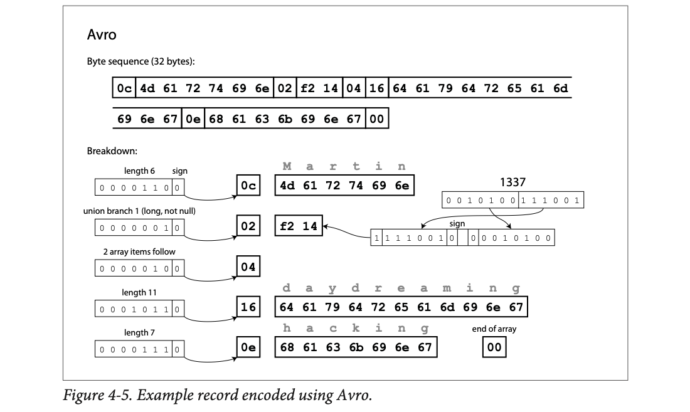
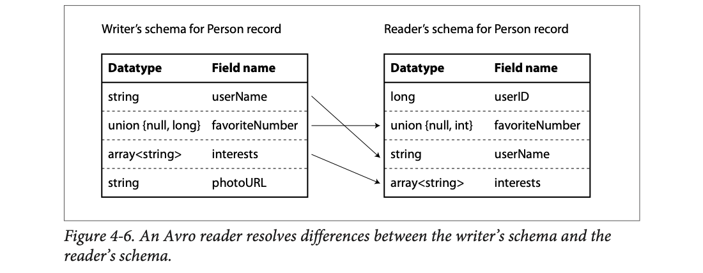
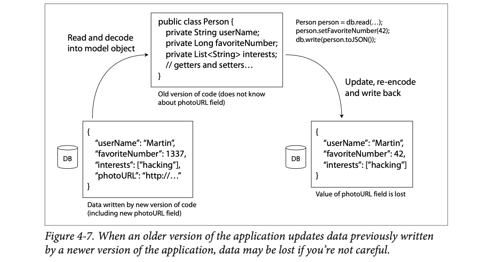

Programs keep data as objects in memory, but to save it to disk or send it over the network they must turn it into bytes (encoding) and back (decoding). The chapter compares the ways of doing that: language-built-in formats, JSON/XML/CSV, binary JSON, and the schema-based binary formats Thrift, Protocol Buffers and Avro, encoding the same small record in each one, from 81 bytes down to 32. The real question is not size but change: during a rolling upgrade old and new code run side by side, so new code must read old data (backward compatibility) and old code must read new data (forward compatibility). Field tags (Thrift/Protobuf) and writer/reader schemas (Avro) are two clever answers. The chapter ends by following encoded data through three kinds of "pipes": databases, service calls (REST and RPC), and asynchronous messages (brokers and actors), and shows what compatibility means in each.
Kleppmann builds one argument: you can't upgrade everything at the same instant, so data must stay readable across versions. Every section is one link in that chain.
| Short | Stands for | In one line |
|---|---|---|
| JSON | JavaScript Object Notation | Text format of objects {}, arrays [], strings, numbers. |
| XML | Extensible Markup Language | Text format with <tags>, like HTML for data. |
| CSV | Comma-separated values | One row per line, columns split by commas. |
| API | Application programming interface | The set of requests one program accepts from another. |
| HTTP | Hypertext Transfer Protocol | The web's request/response protocol (GET, POST…). |
| URL | Uniform Resource Locator | A web address, e.g. /users/42. |
| REST | Representational State Transfer | A design style for HTTP APIs (plate 21). |
| SOAP | Simple Object Access Protocol | An XML-based API protocol (plate 21). |
| WSDL | Web Services Description Language | SOAP's XML description of an API. |
| RPC | Remote procedure call | A network request dressed up as a function call (plate 22). |
| gRPC | Google's RPC framework | RPC on top of Protocol Buffers (plate 23). |
| IDL | Interface definition language | The schema language of Thrift / Protobuf / Avro IDL. |
| SOA | Service-oriented architecture | An app split into services that call each other; today "microservices". |
| ASCII / UTF-8 | Character encodings | How letters become bytes (M = 0x4d). |
| ODBC / JDBC | Open / Java Database Connectivity | Standard driver APIs for talking to a database. |
| ASN.1 / DER | Abstract Syntax Notation One / Distinguished Encoding Rules | A 1984 schema language and its binary encoding (plate 15). |
| SSL / TLS | Secure Sockets Layer / Transport Layer Security | The encryption behind https. |
| IDE | Integrated development environment | A code editor with autocomplete and type checks. |
| EJB / RMI / DCOM / CORBA | Older RPC systems | Enterprise JavaBeans, Java Remote Method Invocation, Distributed COM, Common Object Request Broker Architecture (plate 22). |
The chapter opens with Heraclitus: everything changes and nothing stands still.
Applications always change over time. Features get added or changed when new products launch, when user needs are better understood, or when the business changes. Chapter 1 called the goal evolvability: build systems that are easy to adapt to change.
Usually a feature change also changes the data the app stores: a new field or a new type of record has to be captured, or old data has to be shown in a new way.
The data models of Chapter 2 cope with this differently:
ALTER statements), but at any one moment exactly one schema is in force.When the format changes, the code usually has to change too (you add a field, and the code now reads and writes it). But in a large application the code cannot change everywhere instantly:
So old and new code, and old and new data formats, may all exist in the system at the same time. To keep running smoothly we need compatibility in both directions:
Newer code can read data written by older code. Usually not hard: as the author of the new code you know the old format and can handle it explicitly (if needed, just keep the old reading code around).
Older code can read data written by newer code. Trickier: the old code must ignore additions made by a version it has never seen.
The chapter then looks at formats (JSON, XML, Protocol Buffers, Thrift, Avro), how each handles schema changes, and how they're used for storage and for communication: web services, REST, RPC, actors and message queues.
Indian Railways changes the format of the PNR slip: a new "berth preference" line is printed. For weeks, some counters have the new printer software and some have the old. A new counter must read old slips without crashing (backward). An old counter given a new slip must still read the name and train number and simply skip the line it doesn't understand (forward). Where it breaks: a human clerk can guess what an unknown line means; old code can't guess, it can only skip it safely if the format tells it how long that line is.
Compatibility is a promise between whoever writes bytes and whoever reads them later. Backward is easy because the newer side has more knowledge (it knows the past). Forward is hard because the older side has less knowledge (it can't know the future), so the format itself must make "unknown stuff" skippable.
Version 1 of a profile app stores {"userName":"Martin","favoriteNumber":1337}. Version 2 adds a field: {"userName":"Martin","favoriteNumber":1337,"photoURL":"/p/42.jpg"}. During a rolling upgrade, all four combinations happen (illustrative):
| Who reads | What it reads | What must happen | Name |
|---|---|---|---|
| v1 code | v1 record | normal | no change |
| v2 code | v1 record (no photoURL) | show a default picture, don't crash | backward |
| v1 code | v2 record (extra photoURL) | ignore the unknown field, show name + number | forward |
| v2 code | v2 record | normal | no change |
The tricky row is the third: v1 was written before anyone thought of photoURL, so it must have been built to skip what it doesn't know.
Programs usually work with data in (at least) two different representations:
So we need a translation. In-memory → bytes is called encoding (also serialization or marshalling). Bytes → in-memory is decoding (also parsing, deserialization, unmarshalling). Footnote ii: encoding has nothing to do with encryption; the book doesn't cover encryption.
"Serialization" also means something completely different in transactions (Chapter 7: serializable isolation). To avoid the double meaning, the book says encoding, even though "serialization" is probably the more common word.
Because this is such a common problem, there are many libraries and formats. The next plates are a quick tour.
{"userName": (12 bytes). It does not write @0x7f80: that address means nothing outside process A."Martin". Running total: 20 bytes.,"favoriteNumber":, follow the pointer to the int object, and write its digits 1337. Total: 42 bytes.,"interests":[ and get ready to walk the list's own pointers. Total: 56 bytes."daydreaming". Total: 69 bytes.,"hacking", then close the list and object ]}. Total: 81 bytes, the book's number for Example 4-1 as compact JSON. Six objects became one flat line with zero addresses.Your kitchen is "in memory": the sugar is in the second shelf, the jar label says "see shelf 2". To send your recipe to your cousin in Pune you can't write "see shelf 2" — her kitchen is different. You must write "2 spoons sugar" in full. That rewriting is encoding; her cooking from the paper is decoding. Where it breaks: a recipe is read by a human who forgives mistakes; a decoder needs every byte exactly right.
A pointer is a memory address inside one process. Another process (or the same program tomorrow) has a different memory layout, so the address is meaningless there. Encoding "follows" every pointer and writes the data it points to inline, in an agreed order, so the result stands alone.
Take Example 4-1 inside a Python program. In memory it is not one thing: it is a dict object that points to a string object "Martin", an int object 1337, and a list object, which in turn points to two more string objects. That is six objects scattered around RAM, linked by addresses. json.dumps(person) walks every pointer and writes one flat line of text: {"userName":"Martin","favoriteNumber":1337,"interests":["daydreaming","hacking"]}, 81 bytes. Another process runs json.loads on those bytes and builds six brand-new objects at completely different addresses. Same data, different memory: that is why encoding has to copy values, not addresses. (Illustrative; not from the book.)
Many languages have built-in encoding of in-memory objects: Java has java.io.Serializable, Ruby has Marshal, Python has pickle, and third-party libraries exist too, like Kryo for Java. They're very convenient: save and restore objects with almost no extra code. But they have deep problems:
Conclusion: it's generally a bad idea to use your language's built-in encoding for anything other than very transient purposes.
A pickle jar of Amma's achaar is great at home, but you can't ship it abroad and expect a lab to know what's inside, and if someone swaps the jar, you eat whatever they put in. Built-in formats are home-made jars: perfect for "today, same kitchen", risky for anything that travels or lasts. Where it breaks: the real danger isn't bad taste, it's that "opening the jar" runs code.
The encoded bytes say "this is an object of class X with these fields". The decoder looks up class X and builds it, running constructors or special hooks (e.g. Python's __reduce__, Java's readObject). If the bytes come from an attacker, "class X" can be any class on your classpath, including ones whose hooks run shell commands. (The hook names are beyond the book.)
A Python service caches session objects with pickle.dumps in Redis. Six months later a Go service needs the same sessions: it can't read pickle. And if anyone can write to that Redis key, pickle.loads on it can run their code on your server. Encoding the session as JSON or Protobuf avoids both problems.
Moving to standard encodings that many languages can read and write, JSON and XML are the obvious choices: widely known, widely supported, and almost as widely disliked. XML is criticised as too verbose and needlessly complicated. JSON is popular mainly because web browsers support it built-in (it's a subset of JavaScript) and it's simpler than XML. CSV is another popular language-independent format, though less powerful.
All three are textual, so somewhat human-readable. Beyond arguments about syntax, they have subtle problems:
Despite the flaws, JSON, XML and CSV are good enough for many purposes and will likely stay popular, especially as data interchange formats (sending data from one organisation to another). There, as long as people agree on the format, it often doesn't matter how pretty or efficient it is: getting different organisations to agree on anything is the hardest part.
JSON is like writing an amount on a cheque only in figures with no "Rupees ... only" line: a reader with a small calculator (JavaScript's double) may round ₹9,007,199,254,740,993 to ₹...992 and nobody notices. Twitter's fix is to write the amount in words as well (the string). Where it breaks: the cheque's two fields are checked by a human; in JSON both copies are just sent, and it's the client's job to use the string one.
A double has 52 stored fraction bits (53 with the hidden bit). Every integer up to 253 = 9,007,199,254,740,992 fits exactly. Above that, the gap between neighbouring doubles is 2, then 4, and so on, so odd numbers get rounded to an even neighbour. A 64-bit ID can be up to about 9.2 × 1018, well past that limit.
Bytes DE AD BE EF (4 bytes) as Base64 become the text 3q2+7w== (8 characters). Base64 turns every 3 bytes into 4 characters, so a 3 MB image becomes about 4 MB of JSON text, plus the receiver must know (from a schema or convention) to decode it.
For data used only inside your organisation there's less pressure to use a lowest-common-denominator format. You could pick one that's more compact or faster to parse. For a small dataset the gain is negligible, but at terabytes the choice of format matters a lot.
JSON is less verbose than XML, but both use a lot of space compared to binary formats. That led to many binary encodings for JSON (MessagePack, BSON, BJSON, UBJSON, BISON, Smile, …) and for XML (WBXML, Fast Infoset, …). They are used in niches, but none is as widely adopted as text JSON and XML.
Some add datatypes (e.g. separate integers and floats, or support binary strings), but otherwise they keep the JSON/XML data model. Crucially, since they don't prescribe a schema, they must include every field name in the encoded data: the strings userName, favoriteNumber and interests still appear in the bytes.
The record that the rest of the chapter encodes again and again, Example 4-1:
{
"userName": "Martin",
"favoriteNumber": 1337,
"interests": ["daydreaming", "hacking"]
}Encoded with MessagePack, the first bytes are:
0x83: an object (top four bits 0x80) with 3 fields (bottom four bits 0x03). If an object has more than 15 fields, the count doesn't fit in 4 bits; it then gets a different type marker and the count is stored in 2 or 4 bytes.0xa8: a string (top four bits 0xa0) that's 8 bytes long (bottom four bits 0x08).userName in ASCII. Because the length came first, there's no need for an end marker or escaping.The binary encoding is 66 bytes, only a little less than the 81 bytes of text JSON (whitespace removed). All binary JSONs are similar. It's unclear whether such a small saving (and maybe faster parsing) is worth losing human-readability. The next sections do much better: 32 bytes for the same record.

The top block is the raw 66 bytes in hex, with boxes around each logical piece. The "Breakdown" below lays the same pieces out one per meaning. Small single-byte boxes (83, a8, a6, ae, cd, a9, 92, ab, a7) are type+length headers; the long boxes are the actual characters (grey letters above show which). Notice three long boxes are just field names (userName, favoriteNumber, interests) — 31 of the 66 bytes. cd means "uint16 follows", and 05 39 is 1337 in hex (5×256 + 57). 92 is "array of 2".
A school register where every single page repeats the column headings "Roll No | Name | Marks" in full. Binary JSON shrinks the handwriting, but still rewrites the headings on every page. A schema-based format prints the headings once on the cover and leaves them out of the pages. Where it breaks: the register's pages are in one book; encoded records travel separately, so "the cover" (the schema) must reach the reader somehow (plate 12).
MessagePack packs a type and a small length into one byte (high nibble, i.e. the top 4 bits = type family; low nibble, the bottom 4 bits = count/length). That removes JSON's quotes, colons, commas and braces. But without a schema the reader has no other way to learn which value is which, so names stay in every record.
Where the 66 bytes go: 9 header bytes (83 a8 a6 ae cd a9 92 ab a7) + 31 bytes of field names (8 + 14 + 9) + 26 bytes of values (Martin 6 + 1337's 2 + daydreaming 11 + hacking 7) = 66. Field names alone are almost half.
Apache Thrift and Protocol Buffers (protobuf) are binary encoding libraries built on the same idea. Protobuf came from Google, Thrift from Facebook; both were open-sourced in 2007–08. Both require a schema for any data they encode. In Thrift's interface definition language (IDL), Example 4-1's schema is:
struct Person {
1: required string userName,
2: optional i64 favoriteNumber,
3: optional list<string> interests
}The Protocol Buffers version looks very similar:
message Person {
required string user_name = 1;
optional int64 favorite_number = 2;
repeated string interests = 3;
}Each comes with a code generation tool that takes the schema and produces classes in various languages. Your code calls the generated code to encode or decode records.
Confusingly, Thrift has two binary formats, BinaryProtocol and CompactProtocol. (Footnote iii: actually three — also DenseProtocol, but only the C++ implementation supports it, so it doesn't count as cross-language. Thrift also has two JSON-based formats. "What fun!")
Like MessagePack, each field has a type annotation (string, integer, list…) and where needed a length (string length, list item count). Strings ("Martin", "daydreaming", "hacking") are ASCII (really UTF-8). The big difference: no field names. Instead there are field tags, the numbers 1, 2, 3 from the schema. Tags are like aliases: a compact way to say which field, without spelling out its name.

Read each row of the breakdown left to right as "type (1 byte) · field tag (2 bytes) · value". Row 1: 0b = type 11 (string), 00 01 = tag 1, 00 00 00 06 = length 6, then "Martin". Row 2: 0a = type 10 (i64), tag 2, then 1337 as a full 8-byte integer (…05 39). Row 3: 0f = type 15 (list), tag 3, 0b = items are strings, 00 00 00 02 = 2 items, then each string as 4-byte length + characters. The final 00 marks the end of the struct. Lots of zero bytes: fixed-width numbers waste space.
Same meaning, packed into 34 bytes. Two tricks: it packs the field type and tag number into one byte, and it uses variable-length integers. 1337 takes 2 bytes instead of 8: the top bit of each byte says whether more bytes follow. So numbers from −64 to 63 take 1 byte, −8192 to 8191 take 2 bytes, and so on; bigger numbers use more bytes.

Left side: each header byte is split into two halves. The top 4 bits are "field tag += 1" (the tag is stored as the difference from the previous tag, here always 1), the bottom 4 bits are the type (8 = string, 6 = i64, 9 = list). So 0001|1000 = 18. On the right, 1337's bits are cut into 7-bit groups (with a sign bit tucked in at the bottom), the low group goes first with its top bit set to 1 ("more follows"), giving f2 14. 28 = "2 list items, item type 8 (string)". Lengths 06, 0b, 07 are now 1 byte each instead of 4.
Protobuf has only one binary format. It packs bits slightly differently, but is otherwise very similar to CompactProtocol: 33 bytes.

Each key byte is tag in the top 5 bits, wire type in the bottom 3: 00001|010 = tag 1, type 2 (length-delimited string) = 0a; 00010|000 = tag 2, type 0 (varint) = 10; 00011|010 = tag 3, string = 1a. 1337 is a plain varint with no sign bit: low 7 bits 0111001 with the "more" bit set → b9, then 0001010 → 0a. And the list? There is none: tag 3 simply appears twice, once per interest. No end-of-struct byte either.
One detail: each field was marked required or optional, but that makes no difference to the bytes. Nothing in the binary says whether a field was required. required just enables a runtime check that fails if the field isn't set, which helps catch bugs.
A cricket scorer doesn't write "Batsman: Rohit Sharma, Runs: 45" on every ball; the scorebook has numbered columns, and he writes "1: 45". The numbered columns are the field tags; the printed column headings at the top of the book are the schema. Where it breaks: if two scorebooks number their columns differently, the numbers mean nothing. Tags only work while every version of the schema agrees on what each number means forever (plate 7).
Three savings stack up. (1) Names → tags: "favoriteNumber" (14 bytes) becomes part of one byte. (2) Fixed-width → varints: 1337 shrinks from 8 bytes to 2; length prefixes from 4 bytes to 1. (3) Type+tag share a byte. Varints work because small numbers are far more common than big ones. Beyond the book: the "sign bit at the bottom" in Thrift Compact (and Avro) is called zigzag encoding: 0→0, −1→1, 1→2, −2→3… so small negative numbers also stay short. Protobuf's plain int64 doesn't zigzag (it has a separate sint64 type that does), which is why its bytes for 1337 differ.
1337 in binary = 101 0011 1001. Protobuf: groups of 7 from the low end: 0111001, 0001010. First byte = 1 (more) + 0111001 = 1011 1001 = b9; second = 0 + 0001010 = 0a. Thrift Compact: zigzag first: 1337 × 2 = 2674 = 1010 0111 0010; groups 1110010, 0010100 → f2 14. Same as the book's figures.
Schemas inevitably change over time; this is called schema evolution. How do Thrift and Protobuf keep backward and forward compatibility?
An encoded record is just its encoded fields stuck together. Each field is identified by its tag number and annotated with a datatype. If a field isn't set, it's simply left out of the record. So tags are critical to meaning:
required. New code reading old data would fail the check, since old code never wrote that field. So every field added after the first deployment must be optional or have a default.Aadhaar numbers. You can change your name spelling on the card, and every system still finds you, because the number is your identity. But if the government reassigned your number to someone else, every old record pointing at it would now point at the wrong person. Tags are Aadhaar numbers for fields: rename freely, never change, never reuse. Where it breaks: a person can complain about a mix-up; old bytes silently decode as the wrong field.
Skipping works because every field carries its wire type (Protobuf's term, beyond the book): a varint ends at the first byte whose top bit is 0; a length-delimited field says its length first. So a parser can step over any field without knowing what it means. Missing fields are just absent bytes, which is why optional/default fields cost nothing when unset.
v2 adds optional string photo_url = 4;. A v2 writer emits 22 0d h t t p … (tag 4, type 2 = 00100|010 = 0x22, then length). A v1 reader sees tag 4, doesn't know it, reads the length (13) and skips 13 bytes. A v2 reader reading a v1 record finds no tag 4 and leaves photo_url empty. If v2 had made it required, that v1 record would fail the required check.
Changing a field's datatype may be possible (check the docs), but values risk losing precision or being truncated. Example: change a 32-bit integer to 64-bit. New code reads old data easily: the parser fills the missing bits with zero. But old code reading new data still holds the value in a 32-bit variable; if the 64-bit value doesn't fit in 32 bits, it's truncated.
A curious Protobuf detail: it has no list or array type. Instead it has a repeated marker (a third option next to required and optional). As Figure 4-4 showed, a repeated field is exactly what it says: the same tag appears several times. Nice side effect: you may change an optional (single-valued) field into a repeated (multi-valued) one:
Thrift has a dedicated list type, parameterised by the element type. That doesn't allow the single→multi evolution, but it does support nested lists.
Think of an old car odometer with only 5 digits. A new car's 7-digit reading of 1,02,345 km shown on the old 5-digit dial reads 02,345. Nothing crashes; it's just silently wrong. Where it breaks: binary truncation keeps the low 32 bits, not the low decimal digits, so the wrong number looks even stranger (it can even turn negative).
Varint-encoded 32- and 64-bit ints use the same wire type, so an old parser happily reads a big number and then stores it in a 32-bit slot, keeping only the low 32 bits (two's complement). For repeated: an old parser treating the field as single-valued just overwrites the field every time the tag appears, so the last one wins.
Truncation. A favoriteNumber field is widened from 32-bit to 64-bit. New code stores 3,000,000,000 (fits easily in 64 bits). Old code still has a 32-bit slot, which can only hold −2,147,483,648 … 2,147,483,647. It keeps the low 32 bits, which read as a signed number give 3,000,000,000 − 4,294,967,296 = −1,294,967,296. A positive number became negative with no error message. The other direction is safe: old code wrote 1337, new code reads it into 64 bits and fills the extra bits with zero: still 1337.
optional → repeated. Old schema: optional string interest = 3;. New schema: repeated string interests = 3;. New code writes ["daydreaming", "hacking"] as tag 3 twice: 1a 0b daydreaming 1a 07 hacking. Old code sees tag 3 twice and keeps overwriting its one slot, so it ends with "hacking" (the last one). New code reading an old record that had interest = "hacking" gets the list ["hacking"]; an old record with no interest gives [].
Apache Avro is another binary format, interestingly different from Protobuf and Thrift. It started in 2009 as a sub-project of Hadoop, because Thrift wasn't a good fit for Hadoop's use cases.
Avro also uses a schema. It has two schema languages: Avro IDL (interface definition language) for humans to edit, and a JSON-based one that's easier for machines. The example schema in Avro IDL:
record Person {
string userName;
union { null, long } favoriteNumber = null;
array<string> interests;
}The same schema in JSON:
{
"type": "record",
"name": "Person",
"fields": [
{"name": "userName", "type": "string"},
{"name": "favoriteNumber", "type": ["null", "long"], "default": null},
{"name": "interests", "type": {"type": "array", "items": "string"}}
]
}Notice: no tag numbers. Encoding Example 4-1 with this schema gives 32 bytes, the most compact of all.

There is no column for "tag" or "type" anymore. Every small box is a zigzag varint (the last bit before the arrow is the sign): 0c = 6 → "next 6 bytes are a string" (Martin). 02 = 1 → "union branch 1", i.e. the long branch, not null. f2 14 = 1337 (same bytes as Thrift Compact). 04 = 2 → "2 array items follow". 16 = 11 and 0e = 7 are string lengths. 00 = "end of array" (a block of 0 items). You can only tell what each byte means if you hold the schema next to it.
Looking at the bytes, nothing identifies fields or their types. It's just values concatenated. A string is a length prefix plus UTF-8 bytes, but nothing says "this is a string"; it could be an integer or something else. Integers use variable-length encoding (same as Thrift CompactProtocol).
To parse, you walk the fields in the order they appear in the schema and use the schema to know each field's type. So the data can only be decoded correctly if the reader uses the exact same schema as the writer. Any mismatch means wrongly decoded data. So how does Avro support schema evolution? (Next plate.)
A dabbawala's lunchbox code. The tin carries only a few painted marks; the meaning ("this column is the station, this one the building") is in the dabbawalas' heads, the shared schema. Without that knowledge, the marks are just paint. Where it breaks: dabbawalas all learned one code; with Avro, writer and reader may know different versions of the code, which is the next plate's problem.
Everything self-describing (names, tags, type bytes) is moved out of the data into the schema. That is the most compact possible layout, but it makes the bytes meaningless without the schema. Avro's evolution trick therefore can't rely on anything in the bytes; it relies on giving the reader the writer's schema too.
What goes wrong with a mismatched schema: suppose a reader thinks the first field is a long. It reads 0c as the number 6, then treats 4d ('M') as the union branch… and decodes garbage. Avro bytes have no way to detect that by themselves, which is why the writer's schema must always be available.
When an app encodes data (to write a file or database, send over the network…), it uses whatever schema version it knows, maybe compiled into the app. That's the writer's schema.
When an app decodes data (reads a file or database, receives from the network…), it expects the data in some schema: the reader's schema. That's what the app's code relies on; code may have been generated from it at build time.
Avro's key idea: the writer's and reader's schemas don't have to be the same, only compatible. When decoding, the Avro library looks at both side by side and translates the data from the writer's schema into the reader's schema. The Avro specification defines exactly how this schema resolution works:

Left table = how the bytes were written; right table = what the reading code wants. Arrows show matches by name, which is why they cross: userName is 1st on the left but 3rd on the right. photoURL (writer only) has no arrow: it's read past and dropped. userID (reader only) has nothing coming in: it gets the reader's default. favoriteNumber matches by name even though the declared types differ (long vs int); resolution decides whether that type pair is allowed.
The record being read is Example 4-1 plus a photoURL. Defaults are shown in the reader column. Modelled demo of the three rules above.
A wedding RSVP form changed between printings. Old cards ask "Name, Guests, Meal"; the new caterer's sheet wants "Meal, Name, Phone". The caterer copies by heading, not by position (order doesn't matter), drops "Guests" (not on her sheet), and writes "not given" under Phone (her default). Where it breaks: the caterer can read the old card's headings; with Avro the card has no headings, so the reader must be handed the old card's template (the writer's schema) separately.
Think of decoding as two passes. First, the bytes are parsed with the writer's schema. Only that schema can parse them, because the field order and types come from it. Second, each parsed field is matched by name to the reader's schema: extra fields are dropped and missing ones get their defaults.
The Avro spec's type promotions are int → long/float/double, long → float/double, float → double, string ↔ bytes. So the figure's exact pair (writer long, reader int) would actually fail resolution in a real Avro library when a non-null value is present; the figure is about name matching, not that specific type pair.
Run Figure 4-6 with real values. The bytes were written with the writer's schema, so they hold, in this order: userName = "Martin", favoriteNumber = 1337, interests = ["daydreaming", "hacking"], photoURL = "http://…". The reader builds its own record, field by field, in its order:
-1, a made-up value). If the reader's schema had declared no default, reading would fail (that is plate 11's rule).In Avro, forward compatibility means a new schema as writer and an old schema as reader. Backward compatibility means a new schema as reader and an old one as writer.
To stay compatible you may only add or remove a field that has a default value (favoriteNumber above has default null). Say you add a field with a default: a reader on the new schema reading an old record fills in the default.
Null is not automatic. In some languages null is a valid default for any variable; not in Avro. To allow null you must use a union type: union { null, long, string } field; means the field can be a number, a string, or null. You can only use null as a default if it's one of the union's branches. (Footnote iv: to be exact, the default must have the type of the first branch of the union. That is an Avro limitation, not a general rule about unions.) More verbose than nullable-by-default, but being explicit about what can be null helps prevent bugs (the book cites Tony Hoare's "billion dollar mistake" talk on null references).
So Avro has no optional/required markers like Protobuf and Thrift; it has union types and default values instead.
| Avro change | Backward (new reads old) | Forward (old reads new) |
|---|---|---|
| Add field with default | ✓ default filled in | ✓ new field ignored |
| Add field without default | ✗ nothing to fill in | ✓ ignored |
| Remove field with default | ✓ old field ignored | ✓ old reader uses its default |
| Remove field without default | ✓ ignored | ✗ old reader has no value |
| Rename with alias in new schema | ✓ alias matches old name | ✗ old reader doesn't know new name |
| Add a branch to a union | ✓ | ✗ old reader can't decode new branch |
| Change type Avro can convert | ✓ | depends on the pair |
The "Remove with default" forward column and the type-change row's forward column follow from the rules on this plate; the book states the add/remove-without-default, rename and union rows directly.
| Change from v1 | New reader, old data (backward) | Old reader, new data (forward) |
|---|---|---|
add photoURL: union {null, string} = null | missing → fill null ✓ | unknown → skip ✓ |
add photoURL: string, no default | missing, nothing to fill ✗ error | unknown → skip ✓ |
remove favoriteNumber (has default null) | extra → ignore ✓ | missing → fill null ✓ |
remove interests (no default) | extra → ignore ✓ | missing, nothing to fill ✗ error |
write long favoriteNumber = null | not allowed: null is not a long. Use union {null, long} = null schema invalid | |
null. A v1 reader meets a v2 record: photoURL is not in its schema, so it skips it. Both directions work.interests and has nothing to fill in. Forward compatibility is broken. So the rule: only add or remove fields that have a default.long can't hold null, so it can't default to null. Make it a union whose first branch is null (footnote iv).A UPI payment form. Adding a new optional "note" box with a default of blank is harmless: old apps never send it, new apps fill in blank. Adding a compulsory "GST number" box with no default breaks every old payment record the new code tries to read. Where it breaks: forms are filled by people who can be asked again; old data can't be asked anything.
The default value is what makes a field "survivable" in both directions: whichever side is missing the field, the other side can invent the value. Union types make "may be absent" part of the type itself, so a default of null is a deliberate choice, not an accident.
v1 of the Person schema has userName, favoriteNumber, interests. v2 adds union {null, string} photoURL = null (a default). Both directions work, as the diagram above shows. Now a bad v2: it adds string phone with no default. A v2 reader opens a record written by v1: there is no phone value in the bytes and no default to fall back on, so decoding fails. That is "add a field without a default breaks backward compatibility". The mirror case: v2 removes userName, which in v1 had no default. A v1 reader opening v2 data needs a userName and has nothing to fill it with: forward compatibility is broken.
The question so far glossed over: how does the reader know the writer's schema for a given piece of data? We can't include the whole schema with every record: the schema would likely be bigger than the data, wiping out all the savings. The answer depends on context:
A database of schema versions is useful anyway: it's documentation and a chance to check compatibility of schema changes. For the version number you could use a simple incrementing integer or a hash of the schema.
A big ledger book: the column headings are printed once on page 1 (container file). A drawer of loose receipts from many years: each receipt has a small "format v3" stamp, and the shop keeps a binder of what each format looked like (database + version numbers). A phone call: both sides first agree "let's speak Hindi" and then talk (negotiate on connect). Where it breaks: people can switch language mid-call; an Avro connection keeps the negotiated schema for its lifetime.
The cost of shipping a schema is paid once per group of records that share it: per file, per connection, or (via a small integer or hash) per record with a lookup table. The more records share a schema, the cheaper it gets.
The Person schema in JSON, with whitespace removed, is 206 bytes; the record is 32 bytes. Sending the schema with each record would make every record about 7.4× bigger (238 bytes). With a 1-byte version prefix instead, a record is 33 bytes. In a container file of 1 million records (32 MB), the 206-byte schema adds about 0.0006% overhead. (Sizes modelled from this page's schema text.)
The "database of schema versions" idea became the Confluent Schema Registry used with Kafka: each message starts with a magic byte and a 4-byte schema ID, and the registry refuses incompatible schema changes. The book's reference [24] (Jay Kreps, 2015) describes this approach.
One advantage of Avro over Protobuf and Thrift is that the schema has no tag numbers. Why does a couple of numbers matter? Because Avro is friendlier to dynamically generated schemas.
Example: you want to dump a relational database to a file in a binary format (to avoid the textual-format problems of JSON, CSV, SQL). With Avro you can easily generate an Avro schema (in JSON) from the relational schema and dump everything to an Avro object container file. One record schema per table; each column becomes a field; the column name becomes the field name.
If the database schema changes (say one column added, one removed), you just generate a new Avro schema and export with it. The export process doesn't need to care about the change; it converts every time it runs. Readers of the new files see the fields changed, but since fields are identified by name, the updated writer's schema still matches the old reader's schema.
With Thrift or Protobuf, field tags would likely be assigned by hand: each time the database schema changes, an administrator must update the mapping from column names to tags. (It could be automated, but the generator must be very careful never to reuse a previously used tag.) Dynamically generated schemas simply weren't a design goal of Thrift or Protobuf; they were for Avro.
Exam hall seating. Avro is "sit by your name card": if two students leave and one joins, you just print new cards. Protobuf is "sit at seat number": if a student leaves, that seat number must be retired forever, or a newcomer would inherit the absent student's old answer sheet. Someone has to keep the seat register. Where it breaks: an exam lasts a day; tag registers must be kept for as long as any old data exists.
Names already exist in the source (column names), so a generator can produce them for free. Tags are extra state that must be remembered across every past run: "id was 1, email was 2, phone was 3 and is now dead". That history lives outside the current database schema, so a stateless exporter can't produce correct tags.
A users table starts with columns id, email, phone. Later the team drops phone and adds city (illustrative). Here is what each exporter has to produce:
| Column | Avro (generated each run) | Protobuf (tags must be remembered) |
|---|---|---|
| id | field "id" | tag 1 |
| field "email" | tag 2 | |
| phone (dropped) | simply not in the new schema | tag 3 retired forever |
| city (new) | field "city" | tag 4 (never 3) |
The danger case: a naive Protobuf generator numbers columns 1, 2, 3 each run, so city gets tag 3. An old reader still thinks tag 3 is phone, and shows "Pune" as somebody's phone number. Avro's exporter has nothing to remember: the reader matches city by its name.
Thrift and Protobuf rely on code generation: once a schema is defined, generate code implementing it in your language. That's useful in statically typed languages (Java, C++, C#): decoded data gets efficient in-memory structures, and you get type-checking and autocompletion in IDEs.
In dynamically typed languages (JavaScript, Ruby, Python) there's little point: no compile-time type checker to satisfy. Codegen is often frowned on there, since these languages otherwise avoid an explicit compile step. And with a dynamically generated schema (like an Avro schema made from a table), codegen is an unnecessary obstacle to getting at the data.
Avro offers optional codegen for static languages but works fine without it. An object container file embeds the writer's schema, so you can just open it with the Avro library and look at the data like a JSON file. The file is self-describing: it includes all needed metadata. This is especially handy with dynamically typed data-processing languages like Apache Pig: open some Avro files and start analysing without thinking about schemas.
// generated from person.proto
Person p = Person.parseFrom(bytes);
long n = p.getFavoriteNumber(); // IDE autocompletes,
// p.getFavNum() → compile error# Python, reading a self-describing file
for rec in avro_reader(open("people.avro","rb")):
print(rec["favoriteNumber"]) # plain dict
# typo → KeyError at run timeCode is illustrative (not from the book); avro_reader stands for any Avro reading library.
userName, field 2 is null-or-long, field 3 is an array of strings.rec["userName"] straight away, like opening a JSON file. This is what the book means by "self-describing", and why Pig-style analysis "just works"..proto file.userName and favoriteNumber are gone. Normal practice is to get the .proto and generate classes. (Illustrative.)Codegen is a pre-printed form with boxes for each field: great when a strict office (the Java compiler) checks every box. A dynamic language is a friend who just reads your letter: no form needed, as long as the letter (container file) says what's what. Where it breaks: without the form, mistakes are only caught when someone reads the wrong field at run time.
Codegen turns the schema into types the compiler knows. When there is no compiler step, the same schema can instead be interpreted at run time, producing generic maps/dicts. Avro supports both because its decoder can always work from the embedded writer's schema.
A data analyst is handed two files. people.avro is an object container file: it carries its writer's schema at the top, so a Python or Pig script can open it and print rec["userName"] straight away, no build step. people.bin holds Protobuf records, but nobody sent the .proto file: the bytes say "tag 1, string, Martin", but not that tag 1 is called userName. To work with it properly, she first needs the schema and (usually) generated classes. (Illustrative scenario.)
Protobuf, Thrift and Avro all describe a binary format with a schema. Their schema languages are much simpler than XML Schema or JSON Schema, which support detailed validation (e.g. "this string must match this regular expression", "this integer must be between 0 and 100"). Being simpler to implement and use, they now support a fairly wide range of languages.
The ideas aren't new. They share a lot with ASN.1 (Abstract Syntax Notation One), a schema definition language first standardised in 1984, used to define various network protocols. Its binary encoding DER (Distinguished Encoding Rules) still encodes SSL certificates (X.509), the certificates behind every https padlock. ASN.1 supports schema evolution with tag numbers, like Protobuf and Thrift. But it's very complex and badly documented, so probably not a good choice for new apps.
Many data systems also use their own proprietary schema-based binary encoding. Most relational databases have a network protocol for sending queries and getting responses. These protocols are database-specific; the vendor provides a driver (e.g. using the ODBC (Open Database Connectivity) or JDBC (Java Database Connectivity) APIs) that decodes responses into in-memory structures.
So textual formats are widespread, but schema-based binary encodings are a viable option too, with nice properties:
| Property | JSON / XML / CSV | Binary JSON (MessagePack…) | Thrift / Protobuf / Avro |
|---|---|---|---|
| Size of Example 4-1 | 81 B (JSON) | 66 B | 59 / 34 / 33 / 32 B |
| Field names in every record | yes | yes | no (tags or schema order) |
| Schema | optional (XML/JSON Schema), none for CSV | none | required, simple |
| Schema always up to date | no guarantee | — | yes: needed to decode |
| Compatibility check before deploy | hand-made | hand-made | yes, with a schema database |
| Codegen / compile-time types | optional tooling | no | yes (optional for Avro) |
| Human-readable bytes | yes | no | no: decode first |
In summary, schema evolution gives the same kind of flexibility as schemaless / schema-on-read JSON databases, while also giving better guarantees about your data and better tooling.
photoURL, type string, and forgets a default.union {null, string} with default null. Both checks pass. This is the book's third merit of schemas: you can check compatibility before anything is deployed. (Illustrative CI step.)A schema is the official railway timetable: compact (trains are numbers, not descriptions), always current (trains literally run by it), and you can check a new timetable for clashes before it takes effect. Where it breaks: a timetable can be late in real life; a schema can't be "out of date" because data that disagrees with it simply won't decode.
The trick is that the schema is load-bearing: it is needed to decode, so it can't rot like a wiki page. And because it's machine-readable, a compatibility check is just comparing two schemas with the rules from plates 7 and 11.
A schema database in action (illustrative): a developer opens a pull request that removes a field without a default from an Avro schema. Before anything is deployed, the build compares the new schema with the latest one in the schema database using plate 11's rules, sees "forward compatibility broken: old readers have no value for this field", and fails the build. The mistake is caught on a laptop instead of in production at 2 a.m. Hand-written documentation could never do that check, because nothing forces it to match the real data.
Whenever you send data to a process you don't share memory with (over the network, or into a file), you encode it as bytes. We've seen many encodings, and forward/backward compatibility, which matter for evolvability: upgrading parts of the system independently instead of all at once.
Compatibility is a relationship between the process that encodes and the process that decodes. That's abstract, because data can flow between processes in many ways. The rest of the chapter covers the most common:
| Mode | Encoder | Decoder | Gap in time | Compatibility needed |
|---|---|---|---|---|
| Database | writer process | reader process (maybe future self) | ms to years | backward always; forward often (rolling upgrades) |
| REST / RPC | client (request), server (response) | server (request), client (response) | milliseconds | backward on requests, forward on responses (servers upgraded first) |
| Message passing | sender / publisher | consumer(s) | low latency, buffered | both, so producers and consumers deploy in any order |
{"items":[7,9],"address":"…"} as JSON; the order service (v31) decodes it a few milliseconds later.{"orderId":981,"eta":"35 min"}, the app decodes it. App and server versions differ, so both directions matter.order-placed message and hands it to the broker. It does not wait for anyone to read it.Three ways to get a message to your brother: write it in the family diary (database: he reads it later, maybe much later), phone him (RPC: he answers now), or post it on the family WhatsApp group (message broker: delivered soon, anyone in the group can read it, you don't wait for a reply). Where it breaks: WhatsApp shows ticks; many brokers give you no delivery receipt back to the sender.
The three modes differ in two things: who encodes and decodes, and how long the bytes wait in between. The longer bytes wait, the more code versions can come and go in the meantime: an RPC request waits milliseconds, a message in a broker waits seconds to hours, a database row can wait years. So the longer the wait, the more seriously you must take compatibility in both directions.
One tap of "Place order" in a food app touches all three modes (illustrative). (1) Service call: the phone app sends a REST request to the order service and gets a response back. (2) Database: the order service writes the order row to its database. A later version of the same service may read it next year. (3) Message passing: the order service publishes an "order placed" message to a broker. The email service and the delivery service each consume it whenever they are ready. Three different encoders and decoders, possibly all on different code versions.
In a database, the process that writes encodes the data and the process that reads decodes it. If only one process uses the database, the reader is just a later version of the same process: storing something is like sending a message to your future self.
Backward compatibility is clearly needed here; otherwise your future self can't decode what you wrote earlier.
Usually several processes access a database at once: different apps or services, or several instances of one service (in parallel for scale or fault tolerance). While the app is changing, some will run newer code and some older, for example mid-rolling-upgrade. So a value may be written by newer code and then read by older code that's still running. So forward compatibility is often needed for databases too.
An extra snag: you add a field, newer code writes a value for it. Then older code (which doesn't know the field) reads the record, updates it, and writes it back. Usually you want the old code to keep the new field intact, even though it can't interpret it.
The encoding formats above support preserving unknown fields, but sometimes you must take care at the application level, as in Figure 4-7. If you decode a database value into model objects and later re-encode those objects, the unknown field can be lost in translation. Not a hard problem to solve; you just need to be aware of it.

Follow the arrows clockwise. Bottom left: the DB holds a record written by new code, including photoURL. Top: old code reads it into its Person class, which only has userName, favoriteNumber and interests, so there's nowhere to put photoURL. The code (top right) changes favoriteNumber to 42 and writes person.toJSON(). Bottom right: the stored record now has 42, but photoURL is gone. Nobody deleted it on purpose; it fell through the model class.
Your mother updates the family address register by copying each page onto a new, printed form. The new form has no "email" column (she uses last year's forms), so when she copies your entry to fix your phone number, your email, which your sister added, silently disappears. Where it breaks: a person might notice the missing column; code never notices, it just writes what its class has.
The decode step maps bytes into a fixed class. Anything the class has no slot for is thrown away. The exception: the library keeps it in a side "unknown fields" bag and writes it back out on encode (Protobuf does this in many languages; Beyond the book: proto3 dropped unknown fields at first and restored keeping them in version 3.5). If you use plain model classes or hand-written toJSON(), you must carry the unknowns yourself.
Mid rolling upgrade, 3 of 10 app servers run v2 (writes photoURL), 7 run v1. A user uploads a photo (v2 server), then edits their favourite number (load balancer sends it to a v1 server). Photo gone. With 70% of requests on v1, almost every edit right after a photo upload loses it, until the upgrade finishes.
A database usually lets any value be updated at any time, so one database may hold values written five milliseconds ago and values written five years ago.
When you deploy a new version of a (server-side) app, you might replace the old version completely within minutes. Not so with the data: the five-year-old data is still there in its original encoding, unless you've explicitly rewritten it. This is summed up as data outlives code.
Rewriting (migrating) data into a new schema is possible but expensive on a large dataset, so most databases avoid it when they can. Most relational databases allow simple schema changes, like adding a column with a null default, without rewriting existing data. (Footnote v: except MySQL, which often rewrites the whole table even when not strictly necessary, as Chapter 2 mentioned.) When an old row is read, the database fills in nulls for columns missing from the on-disk data. LinkedIn's document database Espresso uses Avro for storage, so it can use Avro's evolution rules.
Schema evolution thus lets the whole database look as if it were encoded with one schema, even though storage holds records encoded with various historical versions.
Modelled: v1 = (id, name), v2 adds email default null, v3 adds city default null.
id and name.ALTER TABLE users ADD COLUMN email … DEFAULT NULL. Only the schema (catalogue) changes; row 1's bytes stay exactly as written. App v2 writes row 2 with an email.city, same trick. App v3 writes row 3. The table now holds three different on-disk formats.A family album: photos from 1985 are black-and-white prints, 2005 ones are 4×6 colour, 2024 ones are phone printouts. You don't reprint the old ones every time the camera changes; the album (the schema) just has a slot that accepts all of them. Where it breaks: you can look at a print and see what it is; the database needs a version tag or schema rules to know how each old record was written.
"Add column with null default" is cheap because nothing on disk changes: only the catalogue (the schema) changes, and the read path supplies the default for old rows. Full migrations rewrite every row, which costs I/O proportional to the table size.
PostgreSQL 11+ also adds a column with a non-null constant default without rewriting the table, and MySQL 8.0 added "instant" ADD COLUMN, so footnote v is less true today than in 2016.
You may snapshot your database now and then, for backup or to load into a data warehouse. The dump is typically encoded with the latest schema, even if the source had a mix of schema versions from different eras: you're copying everything anyway, so encode the copy consistently.
The dump is written in one go and is then immutable, so formats like Avro object container files fit well. It's also a good chance to use an analytics-friendly column-oriented format (stores each column together instead of each row, see Ch.3) such as Parquet. Chapter 10 says more about archival data.
city is missing → null.Scanning your old school certificates into one PDF: the originals are on different paper sizes and fonts, but the scan puts them all in one consistent format, and you never edit the PDF afterwards. Where it breaks: a scan is a picture; a dump re-encodes, so it must fill in defaults for fields old rows never had.
A dump job reads each old record with the writer's schema it was written with. It translates the record to the latest schema, filling defaults for fields old rows never had (as on plate 10). Then it writes everything with that one latest schema. Because the output file is written once and never updated, it only needs to say its schema once, at the top: exactly what an Avro object container file does.
The live database above holds rows from v1 (id, name), v2 (+ email) and v3 (+ city) (modelled versions). The nightly snapshot writes all four rows with v3: a 2019 v1 row comes out as {id: 1, name: "Asha", email: null, city: null}. The data warehouse now reads one file with one schema instead of three formats. If the warehouse prefers columns, the same dump can be written as Parquet instead.
When processes talk over a network, the most common arrangement has two roles: clients and servers. Servers expose an API over the network; clients connect and make requests to it. The API a server exposes is a service.
The web works this way: browsers (clients) make GET requests to download HTML, CSS, JavaScript and images, and POST requests to submit data. The API is a standard set of protocols and formats (HTTP, the web's request/response protocol; URLs, web addresses; SSL/TLS, the encryption behind https; HTML, the page markup…). Because browsers, servers and site authors mostly agree on these standards, any browser can visit any website (at least in theory!).
Browsers aren't the only clients. A native app on a phone or desktop can make network requests too, and client-side JavaScript in a browser can use XMLHttpRequest to become an HTTP client (this is Ajax). Then the response isn't HTML for a human but data in a format convenient for code (like JSON). HTTP may be the transport, but the API on top is application-specific, and client and server must agree on its details.
A server can itself be a client of another service (a web app server is a client of its database). This is used to split a large app into smaller services by functionality, each calling others as needed. Traditionally called service-oriented architecture (SOA), more recently refined and rebranded as microservices.
A key goal: make the app easier to change by making services independently deployable and evolvable. Each service is owned by one team that releases often without coordinating with other teams. So expect old and new versions of servers and clients running at the same time, and the data encoding between them must be compatible across API versions: exactly this chapter's topic.
GET /orders/981 → {"orderId":981,"total":450}GET /orders/981 → {"orderId":981,"total":450,"tip":20}GET /orders/981 → {"orderId":981,"total":450,"amount":450,"tip":20}orderId and total."tip":20. Old v7 apps ignore the unknown field and still show ₹450. ✓ (forward compatibility on responses)total to amount. Removing total would break every v7/v8 app, so v9 adds amount and keeps total. Independent deploys only work because each change is compatible.A Swiggy order: the app (client) calls the order service, which itself calls the restaurant service, the payment service (UPI) and the delivery-partner service. Each is run by a different team that ships on its own schedule. Where it breaks: in the real kitchen everyone hears the same shout; in microservices each call is a network message that may be encoded by a different version.
A service's API is a contract between two programs owned by different teams. "Independently deployable" means neither team waits for the other. So there is always a window (often weeks for mobile apps) in which an old client talks to a new server, or a new server talks to an old downstream service. The encoding of requests and responses must survive that window: that is the chapter's compatibility problem, now on the network.
(Illustrative.) The orders team ships v8, which adds a tip field to its response JSON. The mobile app on users' phones is still v7 and has never heard of tip: it must ignore it (forward compatibility). Meanwhile v8 must still accept requests from v7 apps that never send a tip (backward compatibility). Nobody had to coordinate a release date.
When the service is spoken over HTTP, it's a web service. Slight misnomer: they're used in several contexts, not only "the web":
Two popular approaches, almost opposite in philosophy and the subject of heated debate (footnote vi: even within each camp there are arguments, e.g. HATEOAS, "hypermedia as the engine of application state", often provokes discussion):
(REpresentational State Transfer.) Not a protocol but a design philosophy built on HTTP's principles. Simple data formats, URLs to identify resources, and HTTP features for cache control, authentication and content-type negotiation. Gaining popularity over SOAP, at least for cross-organisation integration, and often associated with microservices. An API built this way is RESTful. Its API description equivalent of WSDL is Swagger.
(Originally "Simple Object Access Protocol".) An XML-based protocol for network API requests. Usually used over HTTP, but aims to be independent of HTTP and avoids most HTTP features. Comes with a sprawling set of related standards, the WS-* framework. API described in WSDL (Web Services Description Language, XML-based), which enables code generation so clients call remote methods as local classes. (Footnote vii: despite the similar acronyms, SOAP is not required for SOA; SOAP is a technology, SOA a general approach.)
WSDL isn't designed to be human-readable and SOAP messages are often too complex to build by hand, so SOAP users rely heavily on tools, code generation and IDEs (integrated development environments: code editors like Eclipse or IntelliJ). That's useful in statically typed languages, less so in dynamic ones, and integration is hard for languages SOAP vendors don't support. Even though SOAP is "standardised", interoperability between vendors' implementations often causes problems. So although many large enterprises still use SOAP, it has fallen out of favour in most smaller companies.
GET /users/42 HTTP/1.1
Accept: application/json
HTTP/1.1 200 OK
Cache-Control: max-age=60
{"userName":"Martin","favoriteNumber":1337}POST /UserService HTTP/1.1
Content-Type: text/xml
<soap:Envelope xmlns:soap="…">
<soap:Body>
<GetUser><id>42</id></GetUser>
</soap:Body>
</soap:Envelope>REST uses the URL to name the resource, the HTTP verb as the action, and HTTP headers for caching. SOAP sends everything as an XML envelope to one endpoint, regardless of HTTP's features. Examples are made up, not from the book.
GET /users/42
Accept: application/json
Authorization: Bearer abc…
→ 200 OK Cache-Control: max-age=60
{"userName":"Martin","favoriteNumber":1337}GET /users/42
Accept: application/xml
→ 200 OK Content-Type: application/xml
<user><userName>Martin</userName>…</user>POST /UserService
Content-Type: text/xml
<soap:Envelope><soap:Body>
<GetUser><id>42</id></GetUser>
</soap:Body></soap:Envelope>
→ 200 OK (XML envelope with the user inside)/users/42), the method says "read" (GET), and standard HTTP headers carry the auth token and the wanted format. The server says the answer may be cached for 60 s.Accept header. Same URL, different format (if the server offers it).GetUser) is inside the XML body, described by the WSDL. A plain HTTP cache can't see that this is a read, so it can't help. SOAP deliberately avoids most HTTP features to stay independent of HTTP.REST is the railway enquiry counter: you name the train number (URL) and ask a standard question (GET/POST); anyone can walk up. SOAP is a government form-in-triplicate process: precise and tool-assisted, but you need the right forms (WSDL) and the right clerk (vendor tooling). Where it breaks: REST's simplicity doesn't give you schemas for free; many REST APIs use JSON without a formal schema.
(Illustrative.) A small team writing in Python needs to call a bank's SOAP service. They must find a SOAP library that understands that bank's WSDL, generate or build the XML envelopes, and hope the bank's vendor and their library agree on every WS-* detail. Calling a REST API from the same team is one line: curl https://api.example.com/v1/accounts/42, or the same with any HTTP library. That gap is why SOAP lives on in large enterprises but lost favour in smaller companies.
Web services are just the latest of a long line of technologies for API requests over a network, many hyped and many with serious problems. Enterprise JavaBeans (EJB) and Java Remote Method Invocation (RMI) are limited to Java. DCOM (Distributed Component Object Model) is limited to Microsoft platforms. CORBA (Common Object Request Broker Architecture) is excessively complex and provides neither backward nor forward compatibility.
All are based on the Remote Procedure Call (RPC), an idea from the 1970s. RPC tries to make a request to a remote service look the same as calling a local function in your language, within the same process. This is called location transparency. Convenient at first, but fundamentally flawed, because a network request is very different from a local call:
| # | Local function call | Network request |
|---|---|---|
| 1 | Predictable: succeeds or fails depending only on parameters you control. | Unpredictable: request or response may be lost, the remote machine may be slow or down; outside your control. Network problems are common, so you must anticipate them, e.g. by retrying. |
| 2 | Returns a result, throws an exception, or never returns (infinite loop, crash). | A fourth outcome: returns nothing because of a timeout. You simply don't know what happened: did the request get through or not? (More in Chapter 8.) |
| 3 | No such problem. | If you retry, maybe the requests were getting through and only the responses were lost; retrying then performs the action several times, unless the protocol has deduplication (idempotence). |
| 4 | Takes about the same time every call. | Much slower, and latency is wildly variable: under a millisecond on a good day, many seconds when the network is congested or the service overloaded. |
| 5 | Can pass references (pointers) to local objects efficiently. | All parameters must be encoded into bytes. Fine for numbers and strings, problematic for larger objects. |
| 6 | One process, one language. | Client and service may be in different languages, so the framework must translate types. Can get ugly: not all languages have the same types (recall JavaScript and numbers above 253). |
So there's no point making a remote service look too much like a local object: it's a fundamentally different thing. Part of REST's appeal is that it doesn't hide that it's a network protocol (though that hasn't stopped people building RPC libraries on top of REST).
Asking your roommate across the table to pass the salt is a local call: you see it happen. Sending a courier to your cousin's house asking for ₹500 is an RPC. If the courier doesn't come back, did the money go? Was the courier lost on the way there, or on the way back? If you send a second courier, your cousin may pay twice, unless your note says "request #17, ignore if already paid" (idempotence). Where it breaks: a cousin will probably remember; a server only dedupes if you built it to.
A timeout tells you only "no answer yet", not "didn't happen". The three cases (request lost / done but response lost / still processing) look identical to the client. Retrying is safe only if doing it twice has the same effect as once, which is what an idempotency key gives you: the server remembers keys it has already processed and returns the saved result.
(Modelled timeline.) At t = 0 your app sends "pay ₹500" and waits up to 2 seconds. The server finishes the payment at t = 1.5 s, but the response packet is lost. At t = 2 s the app times out and cannot tell this case from "request never arrived". It retries: the server pays again, and your account shows ₹1,000 gone. With an idempotency key, the retry carries the same key req-17; the server sees it already handled req-17 and just sends back the saved "paid ₹500" answer. One payment, however many retries.
Despite the problems, RPC isn't going away. RPC frameworks exist on top of every encoding in this chapter: Thrift and Avro include RPC support, gRPC is RPC using Protocol Buffers, Finagle also uses Thrift, and Rest.li uses JSON over HTTP.
This new generation is more explicit that a remote request differs from a local call:
Custom RPC with a binary encoding can outperform generic JSON over REST. But RESTful APIs have big advantages. They are easy to experiment with and debug: just use a browser or curl, with no codegen or installs. They are supported by every mainstream language and platform. And there is a vast ecosystem of tools for them: servers, caches, load balancers, proxies, firewalls, monitoring, debugging and testing tools.
So REST dominates public APIs, while RPC frameworks focus on requests between services of the same organisation, usually in the same datacenter.
Getting a home loan: you need a salary slip, a bank statement and a PAN verification. Going to each office one after another takes all morning. Sending three people at once (futures) and combining their papers takes as long as the slowest office. Where it breaks: any one of the three can fail, so the combined result must handle partial failure, which is why futures carry "success or failure", not just a value.
A future (or promise) is a placeholder object you get back immediately, standing for "the answer, or the error, that will arrive later". Because you hold placeholders instead of waiting, you can start several calls at once and then say "when all three are done, combine them", and any one of them failing is a normal, expected result rather than a surprise exception.
(Modelled latencies.) A product page needs price (120 ms), stock (80 ms) and reviews (200 ms) from three services. Called one after another: 120 + 80 + 200 = 400 ms. Started together as futures and combined: you wait only for the slowest, 200 ms. If the reviews call fails, the combined future reports that failure and the page can show price and stock without reviews.
For evolvability, RPC servers and clients must be changeable and deployable independently. Compared with databases, there's a simplifying assumption: it's reasonable to assume all servers are updated first, and all clients second. So you only need backward compatibility on requests and forward compatibility on responses.
An RPC scheme's compatibility is inherited from its encoding:
Service compatibility is harder because RPC is often used across organisational boundaries: the provider has no control over its clients and can't force upgrades. So compatibility must be kept for a long time, maybe forever. If a breaking change is needed, the provider often ends up running multiple API versions side by side.
There's no agreement on how API versioning should work (how a client says which version it wants). For REST, common approaches: a version number in the URL, or in the HTTP Accept header. For services that identify clients with API keys, another option is to store each client's requested API version on the server. The client changes it through a separate admin page (the book's reference here is Stripe's "API upgrades").
| Versioning approach | Example | Note |
|---|---|---|
| Version in URL | GET /v2/users/42 | visible, easy to route and cache |
Version in Accept header | Accept: application/vnd.example.v2+json | URL stays the same; header names the version |
| Stored per API key | key sk_… pinned to 2015-04-07 | client upgrades via an admin page |
Examples are illustrative.
A bank changes its cheque-processing machines. It first upgrades every machine in the clearing house (servers) so they accept both old and new cheque books (backward on requests). Only then does it mail new cheque books to customers (clients). Customers with old books keep working; the slip the machine returns may have a new line that old customers just ignore (forward on responses). Where it breaks: the bank can't force every customer to use the new book, which is why public APIs keep old versions alive for years.
The order of deployment decides which direction you need. If servers are always at least as new as clients, two things follow. Every request is "old or same", so the server must read old data (backward). Every response is "new or same", so the client must read new data (forward).
A payments API ships v2 (illustrative). Request: a new optional parameter currency (default INR). Response: a new field "fee". Servers are upgraded first, so only two combinations happen:
| Direction | Bytes | Result |
|---|---|---|
| old client → new server (request) | POST /pay {"amount":500} | server fills currency=INR backward ✓ |
| new server → old client (response) | {"status":"ok","fee":2} | client skips fee forward ✓ |
breaking: make currency required | POST /pay {"amount":500} | 400 error for every old client → needs /v2/pay running beside /v1/pay |
So far: REST and RPC (one process sends a request over the network and expects a response as fast as possible) and databases (one process writes encoded data, another reads it sometime later). Finally, asynchronous message-passing systems, which sit between the two:
Advantages of a broker over direct RPC:
Unlike RPC, message passing is usually one-way: the sender normally doesn't expect a reply. A process can send a response, but usually on a separate channel. That's what makes it asynchronous: the sender doesn't wait for delivery; it sends and forgets.
The building's security desk taking courier parcels. The courier (sender) doesn't need your flat number's exact location or for you to be home: he drops it at the desk and leaves (async). If you're out, the desk holds it (buffer). If you weren't home when the guard came up, he tries again (redelivery). A notice for "all residents" is copied to every flat (fan-out). Where it breaks: a courier gets a signed receipt; a broker's sender usually gets no reply from the recipient at all.
The broker turns "both sides must be up at the same instant" into "each side talks to the broker when it can". Storing messages (briefly) is what lets it buffer, retry and fan out, which is why the book says it's similar to a database.
(Modelled.) An order service publishes 1 message a second. The email consumer is down for a 10-minute deploy. With direct RPC, those 600 calls fail and the order service has to deal with it. With a broker, the 600 messages simply wait in the queue (buffer). When the email consumer comes back, it works through the backlog. If it crashes halfway through message 301, the broker hands 301 out again (redelivery). The order service never knew the email service was down, or even what its IP address was.
Brokers used to be dominated by commercial enterprise software from TIBCO, IBM WebSphere and webMethods. More recently, open source ones became popular: RabbitMQ, ActiveMQ, HornetQ, NATS and Apache Kafka (compared in Chapter 11).
The exact delivery rules (delivery semantics) vary by product and configuration. In general: a process sends a message to a named queue or topic, and the broker makes sure it's delivered to one or more consumers or subscribers of it. There can be many producers and many consumers on the same topic.
A topic is one-way data flow. But a consumer may publish to another topic (so you can chain them, Chapter 11), or to a reply queue that the original sender consumes (giving request-response, like RPC).
Brokers usually don't enforce a data model: a message is just bytes plus some metadata, so you can use any encoding. If the encoding is backward and forward compatible, you have the most flexibility to change publishers and consumers independently and deploy them in any order.
If a consumer re-publishes messages to another topic, be careful to preserve unknown fields, to avoid the data-loss problem of Figure 4-7.
orders {"orderId":981,"amount":500,"coupon":"DIWALI50"}billing v1 object in memory: Order(orderId=981, amount=500) ← coupon droppedinvoices {"orderId":981,"amount":500} ← coupon lostinvoices {"orderId":981,"amount":500,"coupon":"DIWALI50"} ← unknown field keptcoupon field and publishes. The broker stores the bytes as they are; it never decodes them.coupon, and sends the confirmation. Forward compatibility works. ✓Order class. The class has no slot for coupon, so the value is dropped in memory.invoices. The coupon is gone for good: the same data loss as Figure 4-7, but in a message pipeline. ✗A WhatsApp group "Society Notices": many people can post (producers), every member receives (subscribers), the group doesn't care whether you post text, a photo or a PDF (any encoding). Someone forwarding a notice to another group must forward the whole thing, not retype only the parts they understood. Where it breaks: WhatsApp shows content to humans; brokers deliver opaque bytes that each consumer must decode with a compatible schema.
To the broker a message is just bytes plus a little metadata (like a topic name). It never decodes them, so it neither helps nor hurts compatibility. Compatibility is purely a deal between whoever encodes (the producer) and whoever decodes (each consumer). That is why one topic can carry JSON, Avro or Protobuf, and why the encoding's own rules (plates 7 and 11) decide how freely producers and consumers can be upgraded.
(Illustrative.) The orders producer moves to v2 and adds a coupon field. The email consumer is still v1: it ignores coupon and sends the confirmation email as before (forward compatibility). The billing consumer is also v1, and it re-publishes each order to an invoices topic. If billing decodes into a v1 model class and re-encodes, coupon silently disappears from every invoice, the same bug as Figure 4-7. Billing must pass unknown fields through untouched.
The actor model is a programming model for concurrency in a single process. Instead of dealing with threads directly (with their race conditions, locking and deadlock), logic lives in actors. Each actor talks to others by sending and receiving asynchronous messages. Delivery is not guaranteed: in some error cases messages are lost. Each actor processes one message at a time, so it needn't worry about threads, and the framework can schedule each actor independently.
In distributed actor frameworks, this model scales an app across multiple nodes. The same message-passing mechanism is used whether sender and recipient are on the same node or different nodes. If different, the message is transparently encoded into bytes, sent over the network, and decoded on the other side.
Location transparency works better here than in RPC, because the actor model already assumes messages may be lost, even within one process. Network latency is higher than local, but there's less fundamental mismatch between local and remote communication.
A distributed actor framework essentially combines a message broker and the actor model in one framework. But for rolling upgrades you still need forward and backward compatibility: messages may go from a node on the new version to a node on the old one, and vice versa. Three popular frameworks:
| Framework | Default encoding | Rolling upgrades? |
|---|---|---|
| Akka | Java's built-in serialization: no forward or backward compatibility. | Possible if you replace it with something like Protocol Buffers. |
| Orleans | A custom format that doesn't support rolling upgrades. | To deploy a new version: set up a new cluster, move traffic over, shut down the old one. Custom serialization plugins can be used, as with Akka. |
| Erlang OTP | Records whose schemas are surprisingly hard to change (despite many high-availability features). | Possible but must be planned carefully. An experimental maps datatype (JSON-like, Erlang R17, 2014) may make it easier in future. |
A big restaurant kitchen where each cook (actor) has an order-slip tray and handles one slip at a time; nobody grabs another cook's pan (no shared state, no locks). Slips occasionally fall on the floor (lost messages), and everyone is used to that. Opening a second kitchen across the road just means slips are carried over by a runner; nothing in how cooks work changes. Where it breaks: if the new kitchen writes slips in a new shorthand, the old cooks can't read them: the compatibility problem again.
RPC's location transparency fails because it hides failure modes a local call doesn't have. Actors never promised reliable local delivery, so adding a network doesn't introduce a new kind of failure, only more of it. Encoding compatibility is a separate problem the actor model doesn't solve.
(Illustrative.) A 4-node actor cluster is being upgraded one node at a time. Node 1 runs v2, whose OrderPlaced message has a new coupon field; node 3 still runs v1. An actor on node 1 sends OrderPlaced to an actor on node 3. With Akka's default Java serialization, node 3's class no longer matches what was sent, so the message can't be decoded (Java serialization gives no forward or backward compatibility). Switch the encoding to Protocol Buffers with coupon as a new tag, and node 3 just skips the unknown tag and handles the order.
We looked at several ways to turn data structures into bytes for the network or disk. The details affect not just efficiency but, more importantly, the architecture of applications and your options for deploying them.
Many services need rolling upgrades: a new version goes to a few nodes at a time instead of all at once. That allows releases without downtime (encouraging frequent small releases over rare big ones) and makes deployments less risky (a bad release can be spotted and rolled back before it hits many users). Both help evolvability, the ease of changing an app.
During rolling upgrades (and for other reasons) we must assume different nodes run different code versions. So all data flowing around must be encoded with backward compatibility (new code reads old data) and forward compatibility (old code reads new data).
Formats and their compatibility properties:
Modes of data flow:
Conclusion: with a bit of care, backward/forward compatibility and rolling upgrades are quite achievable. The book signs off wishing your evolution rapid and your deployments frequent.
| Term | Meaning in this chapter |
|---|---|
| Evolvability | How easy it is to change a system over time (Ch.1). |
| Rolling upgrade / staged rollout | Deploy a new version to a few nodes at a time, checking as you go. |
| Backward compatibility | New code can read data written by old code. |
| Forward compatibility | Old code can read data written by new code (ignoring what it doesn't know). |
| Encoding (serialization, marshalling) | In-memory structures → self-contained bytes. |
| Decoding (parsing, deserialization, unmarshalling) | Bytes → in-memory structures. |
| Schema | A description of the record's fields and types. |
| Schema evolution | Changing a schema over time while staying compatible. |
| IDL | Interface definition language: the schema language of Thrift (and Avro IDL). |
| Field tag | Number standing for a field in Thrift/Protobuf bytes; never change or reuse it. |
| Variable-length integer (varint) | Integer stored in as few bytes as needed; top bit of each byte = "more follows". |
required / optional / repeated | Protobuf field markers; required only adds a runtime check; repeated = tag appears many times. |
| Writer's schema | The schema the data was encoded with. |
| Reader's schema | The schema the decoding code expects. |
| Schema resolution | Avro matching writer and reader schemas by field name, ignoring extras, filling defaults. |
| Union type | Avro type that can be one of several types, e.g. {null, long}; how Avro expresses "nullable". |
| Alias | Old name listed in a reader's schema so renamed fields still match. |
| Object container file | Avro file format: writer's schema once at the start, then many records. |
| Data outlives code | Old data stays in its old encoding long after the code that wrote it is gone. |
| Service | The API a server exposes over the network. |
| SOA / microservices | Building an app as many independently deployable services. |
| Web service | A service spoken over HTTP. |
| REST / RESTful | Design philosophy built on HTTP: URLs for resources, HTTP features for caching, auth, content types. |
| SOAP, WSDL, WS-* | XML-based protocol, its API description language, and its family of extra standards. |
| Swagger | The RESTful equivalent of WSDL (API description). |
| RPC | Remote procedure call: making a network request look like a local function call. |
| Location transparency | Hiding whether the thing you call is local or remote. |
| Idempotence | Doing an operation twice has the same effect as once; needed for safe retries. |
| Future / promise | Object representing an asynchronous result that may fail. |
| Service discovery | Finding the IP address and port of a service. |
| Message broker (message queue, message-oriented middleware) | Intermediary that stores messages briefly and delivers them to consumers. |
| Queue / topic, producer / consumer | Named destination for messages; who sends to it; who receives from it. |
| Actor model | Concurrency model where actors with private state exchange async messages, one at a time. |
| System | What the book says | Beyond the book |
|---|---|---|
| Java Serializable, Ruby Marshal, Python pickle, Kryo | Language-specific encodings; insecure and poor at versioning; Java's is slow and bloated. | Python's docs warn never to unpickle untrusted data; Java deserialization bugs were behind many 2015–2016 CVEs (ref [6]). |
| Twitter API | Sends tweet IDs as both a number and a string because of 253. | The id_str field; Snowflake IDs (ref [10]). |
| MessagePack, BSON, Smile… | Binary JSONs; 66 bytes vs 81 for the example. | MongoDB's storage and wire format is BSON. |
| Thrift (Facebook), Protocol Buffers (Google) | Schema + tags + codegen; 59/34/33 bytes. | proto3 (2016) dropped required entirely, following exactly this chapter's logic about adding fields. |
| Avro (Hadoop) | Writer/reader schemas, object container files, no tags; 32 bytes. | Widely used with Kafka plus a schema registry. |
| Espresso (LinkedIn) | Document DB storing Avro with a schema version per record. | — |
| Apache Pig | Opens Avro files and analyses them with no schema work. | — |
| ASN.1 / DER / X.509 | 1984 schema language with tag numbers; DER still encodes SSL certificates. | Every HTTPS certificate you see today is DER-encoded ASN.1. |
| ODBC / JDBC drivers | Decode databases' proprietary binary network protocols. | PostgreSQL's wire protocol, MySQL's client/server protocol. |
| Relational DBs, MySQL | Add nullable column without rewrite; MySQL often rewrites the table. | PostgreSQL 11 fast defaults; MySQL 8.0 instant ADD COLUMN. |
| Parquet | Column-oriented format for archival/analytics dumps. | Default table format in most data lakes (often under Iceberg / Delta). |
| SOAP / WSDL / WS-*, Swagger | Enterprise XML web services vs REST's API descriptions. | Swagger became the OpenAPI Specification (2016). |
| EJB, RMI, DCOM, CORBA | Older RPC systems; language/platform-limited or overly complex. | — |
| gRPC, Finagle, Rest.li, Thrift RPC, Avro RPC | New RPC frameworks; futures, streams, service discovery. | gRPC runs over HTTP/2 and is now the common choice between internal services. |
| Stripe | Stores each client's API version server-side (ref [48]). | Date-named versions pinned per account. |
| TIBCO, IBM WebSphere, webMethods; RabbitMQ, ActiveMQ, HornetQ, NATS, Kafka | Message brokers, commercial and open source. | See Ch.11 for log-based (Kafka) vs traditional queues. |
| Akka, Orleans, Erlang OTP | Distributed actor frameworks with different rolling-upgrade stories. | Erlang maps became standard in OTP 18 (2015). |
Backward: new code reads old data. Forward: old code reads new data. Forward is harder because the old code must ignore additions it couldn't have known about; the format must make unknown parts skippable (plate 1).
Tied to one language; decoding arbitrary classes is a security hole (remote code execution); versioning is an afterthought; efficiency is an afterthought (Java's is slow and bloated) (plate 3).
IDs are 64-bit integers; above 253 a double can't represent integers exactly, so JavaScript would parse the number wrongly. The decimal string copy is exact (plate 4).
Field names: userName, favoriteNumber and interests (31 bytes). Without a schema, binary JSON must carry them in every record (plate 5).
favorite_number to fav_num, and separately change its tag from 2 to 5. Which breaks old data?Only the tag change. Bytes contain tags, never names; renaming is free, but changing tag 2 → 5 makes every stored "tag 2" value unreadable as that field (plate 7).
required?New code reading old records (written by v1, without the field) would fail the required check, breaking backward compatibility. New fields must be optional or have a default (plate 7).
It keeps only the low 32 bits: 5,000,000,000 − 4,294,967,296 = 705,032,704. Silently wrong (plate 8).
optional string interest to repeated string interests. What do old and new readers see?New code reading old data: a list of 0 or 1 elements. Old code reading new data: only the last element (plate 8).
It walks fields in the writer's schema order using the writer's schema for types. Then schema resolution maps by name to the reader's schema: extras ignored, missing fields filled with the reader's defaults (plates 9–10).
The new reader has an alias for the old name, so it can read old data. An old reader has never heard of the new name, so it can't match new data's field (plate 11).
Once at the start of a large object container file; a version number per record plus a schema table in the database (Espresso); negotiated at connection setup (Avro RPC). Version can be an integer or a schema hash (plate 12).
The unknown field can be lost (Figure 4-7), unless the code preserves unknown fields when re-encoding. Same risk for consumers that re-publish messages (plates 17, 26).
Request lost, request processed but response lost, or still processing. You can't tell which. Retrying is safe only with idempotence/deduplication (plate 22).
Assuming servers are upgraded before clients: servers (new) read requests from possibly old clients → backward; clients (old) read responses from new servers → forward (plate 24).
The actor model already assumes messages may be lost even locally, so going over a network adds no fundamentally new failure mode (plate 27).